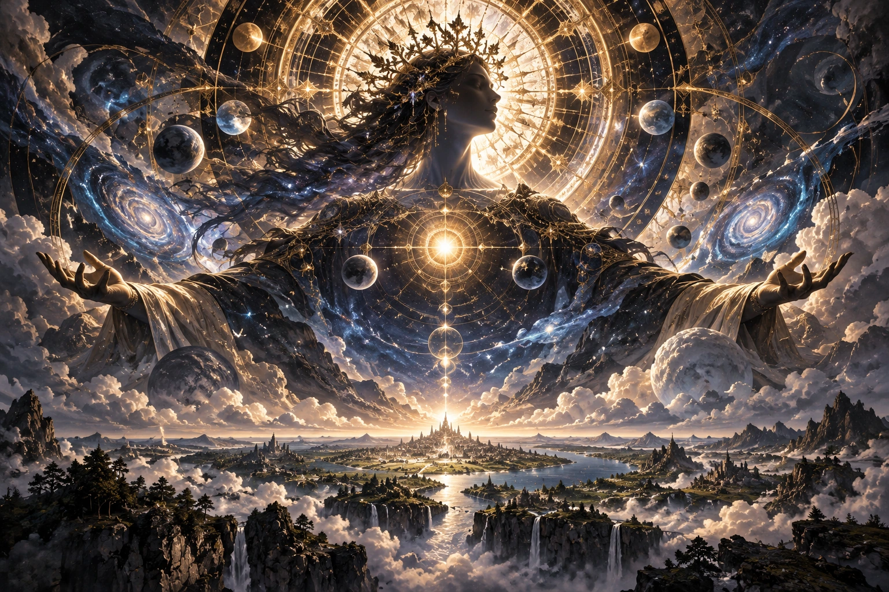

Incorporazione piena della Seat; la persona esercita l'identità divina dell'Effigy come unità cosmica.
Condizione: Deity.
Denominazioni per Effige
Approfondimenti collegati
Significato e passaggio qualitativo
Apotheosis esercita la Seat. Scala cosmica non significa che ogni gesto colpisca tutto l’universo istantaneamente. Una morte non elimina il fenomeno ordinario governato.
Indice A–Z · Sistema soprannaturale · Italiano